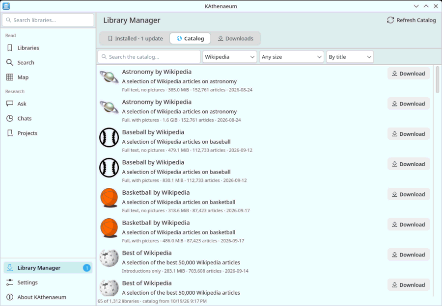

The Catalog tab lists the Kiwix libraries, which you can search, filter by kind and size, and sort. It is saved, so it can be browsed offline. Downloads continue in the background, can be cancelled and resumed, and are checked when they finish: a damaged file is never added.
